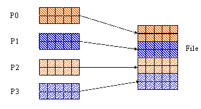
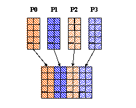
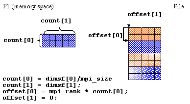
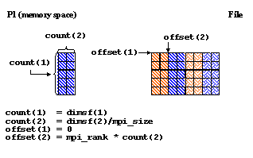

|
HDF5
1.15.0.4224aa0
API Reference
|

|
|
HDF5
1.15.0.4224aa0
API Reference
|
|
Navigate back: Main / Getting Started with HDF5 / A Brief Introduction to Parallel HDF5
This example shows how to write a contiguous buffer in memory to a contiguous hyperslab in a file. In this case, each parallel process writes a contiguous hyperslab to the file.
In the C example (figure a), each hyperslab in memory consists of an equal number of consecutive rows. In the FORTRAN 90 example (figure b), each hyperslab in memory consists of an equal number of consecutive columns. This reflects the difference in the storage order for C and FORTRAN 90.
| Figure a C Example | Figure b Fortran Example |
|---|---|

|

|
In this example, you have a dataset of 8 (rows) x 5 (columns) and each process writes an equal number of rows to the dataset. The dataset hyperslab is defined as follows:
where,
The offset for the hyperslab is different for each process:
where,
The number of processes that you could use would be 1, 2, 4, or 8. The number of rows that would be written by each slab is as follows:
| Processes | Size of count0 |
|---|---|
| 1 | 8 |
| 2 | 4 |
| 4 | 2 |
| 8 | 1 |
If using 4 processes, then process 1 would look like:

|
The code would look like the following:
Below is the example program:
| hyperslab_by_row.c |
If using this example with 4 processes, then,
The following is the output from h5dump for the HDF5 file created by this example using 4 processes:
In this example you have a dataset of 5 (rows) x 8 (columns). Since a contiguous hyperslab in Fortran 90 consists of consecutive columns, each process will be writing an equal number of columns to the dataset.
You would define the size of the hyperslab to write to the dataset as follows:
where,
The offset for the hyperslab dimension would be different for each process:
where,
The number of processes that could be used in this example are 1, 2, 4, or 8. The number of columns that could be written by each slab is as follows:
| Processes | Size of count (2)(# of columns) |
|---|---|
| 1 | 8 |
| 2 | 4 |
| 4 | 2 |
| 8 | 1 |
If using 4 processes, the offset and count parameters for Process 1 would look like:

|
The code would look like the following:
Below is the F90 example program which illustrates how to write contiguous hyperslabs by column in Parallel HDF5:
| hyperslab_by_col.F90 |
If you run this program with 4 processes and look at the output with h5dump you will notice that the output is much like the output shown above for the C example. This is because h5dump is written in C. The data would be displayed in columns if it was printed using Fortran 90 code.
Navigate back: Main / Getting Started with HDF5 / A Brief Introduction to Parallel HDF5
 1.9.7
1.9.7